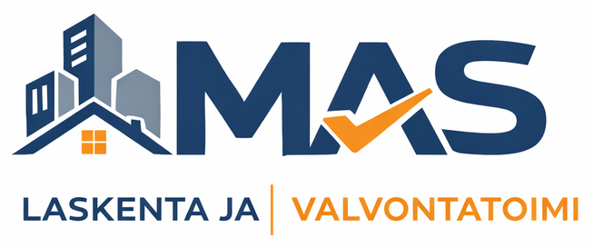

+358 500 723 537Pienille urakoitsijoille · koko Suomi
Teen urakoitsijan turvallisuus- ja laatuasiakirjat kuntoon ja pidän ne ajan tasalla kuukausimaksulla. Sinä teet työn, paperit ovat valmiina ennen työmaalle menoa.
Paperipaketti
Samat asiakirjat, joita käytän itse asennustyömailla. Ne tehdään sinun yrityksellesi ja päivitetään kohteittain.
Työturvallisuus- ja asennussuunnitelma kohteen mukaan, riskiarvio työvaiheittain ja tarvittaessa nostosuunnitelma.
Koko porukan kortit ja luvat yhdessä rekisterissä: työturvallisuus-, tulityö- ja ensiapukortit, työnantajan luvat ja hitsaajien pätevyydet. Muistutus ennen kuin jokin vanhenee.
Tarkastus- ja luovutuspöytäkirjat valmiina pohjina, jotta työvaihe saadaan kuitattua heti kun se on tehty.
Perehdytysmateriaali uusille asentajille ja aliurakoitsijan omat työmaaohjeet.
Kun kohde, porukka tai vaatimus muuttuu, päivitän asiakirjat. Kuukausimaksuun kuuluu ylläpito, ei pelkkä kertatoimitus.
Kaikki paperit yhdessä paikassa, ja ne voi lähettää pääurakoitsijalle sellaisenaan.
Urakkalaskenta
Lasken asennusurakoitsijan tarjoukset piirustuksista ja tarjouspyyntöaineistosta. Saat määrät, työvuorot ja hinnan valmiina tarkistettavaksi ennen kuin lähetät tarjouksen.
Pilarit, palkit, ristikot, siteet ja varusteet asennusyksiköittäin. Työmaahitsaukset ja irto-osat erotellaan tuntitöiksi.
PVP-elementit neliöinä, leikkaukset ja listoitukset omina riveinään. Betonielementit kappaleittain.
Määräluettelo, kesto työvuoroina, urakkahinta, rajaukset ja tarjouskirje. Sinä tarkistat ja lähetät.
Kenelle
Asennus-, hitsaus-, purku-, katto- ja rakennusalan yrityksille, jotka tekevät töitä isompien pääurakoitsijoiden ja teollisuuslaitosten kohteissa.
Näin se toimii
Kerrot, millaisia töitä teet ja mitä tilaajasi vaativat.
Kokoan yrityksesi tiedot, porukan kortit ja luvat sekä olemassa olevat paperit.
Teen asiakirjat ja käymme ne läpi yhdessä ennen käyttöönottoa.
Uusi kohde, uusi asentaja tai vanheneva kortti päivitetään kuukausimaksulla.
Kuka tekee
Olen tehnyt asennusalan töitä 30 vuotta: telakalla, konepajalla ja asennustyömailla. Nykyään vastaan asennusyrityksen tarjouslaskennasta ja työmaiden paperityöstä.
Tiedän, mitä pääurakoitsijan turvallisuuskoordinaattori kysyy, koska teen samoja papereita itse joka viikko.
Yhteys
Hinta määräytyy porukan koon ja kohteiden määrän mukaan. Soita tai laita sähköpostia.